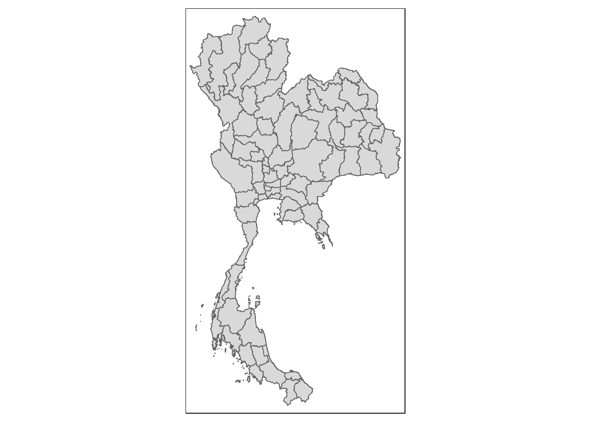
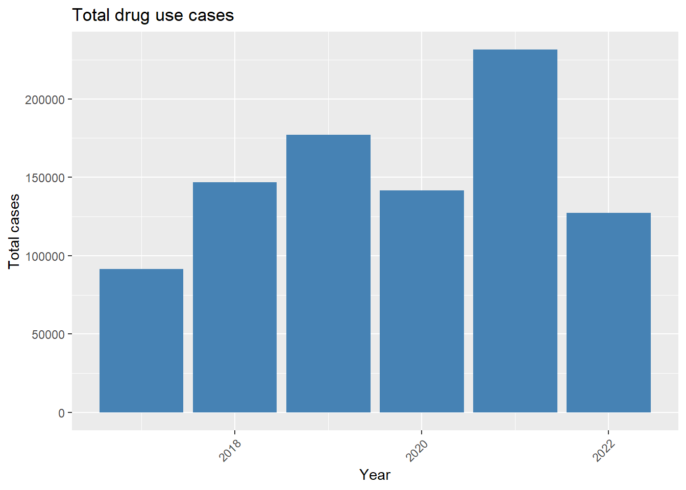
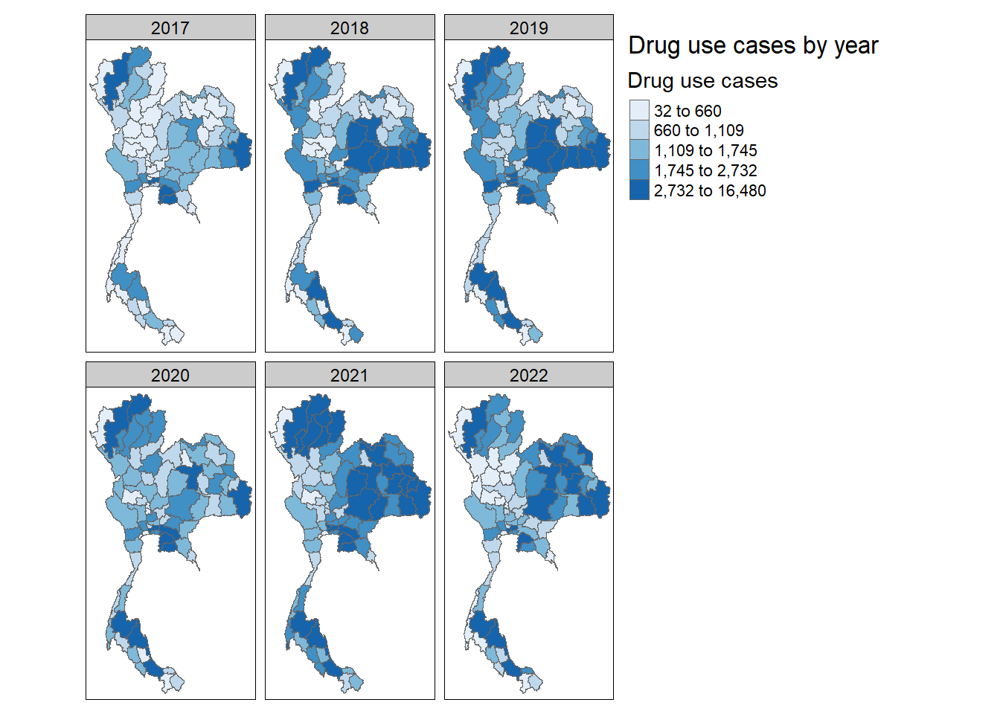
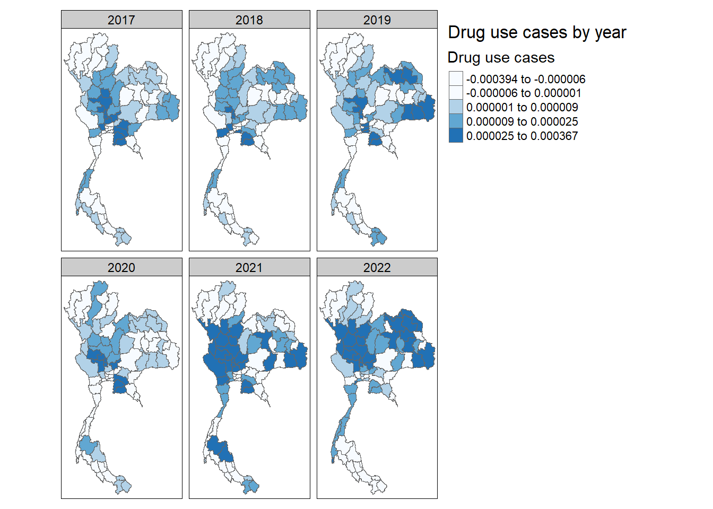
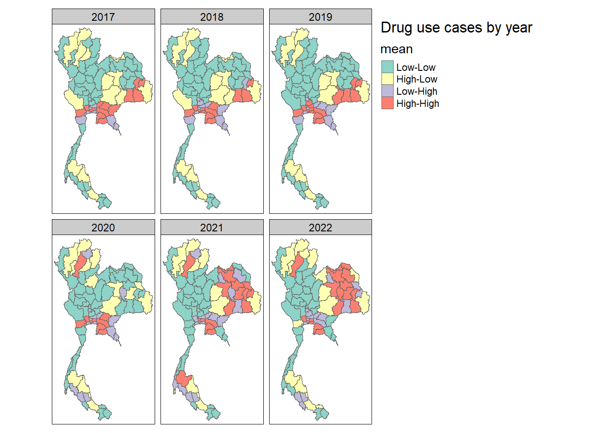
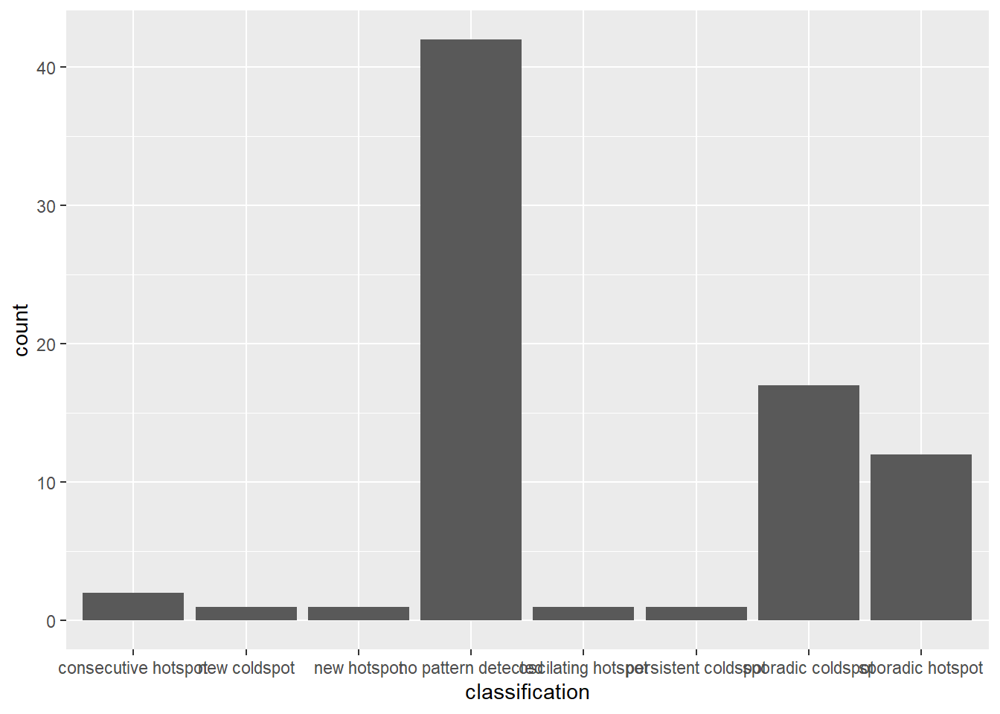
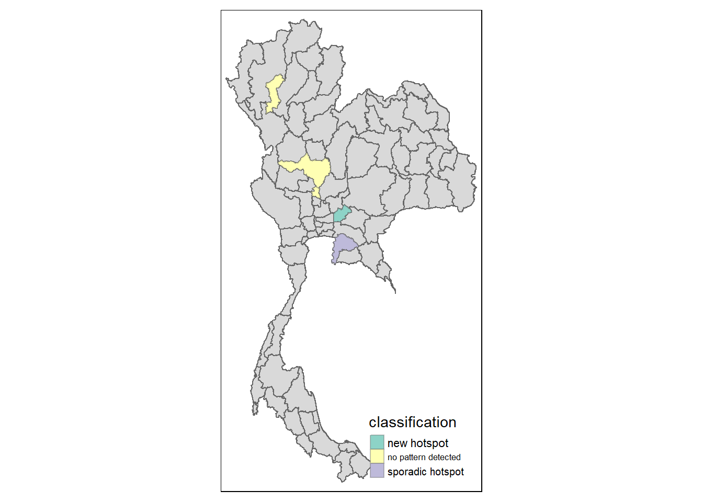

pacman::p_load(sf, tmap, sfdep, tidyverse)Take-home Exercise 2: Drug Offenses
Importing Province Boundary Data (without islands)
Importing the province boundary data
prov_sf <- st_read(dsn = "data/rawdata",
layer = "tha_admbnda_adm1_rtsd_20220121") %>%
st_transform(crs = 32647)Reading layer `tha_admbnda_adm1_rtsd_20220121' from data source
`D:\tskam\is415-gaa\Take-home_Ex\Take-home_Ex2\data\rawdata'
using driver `ESRI Shapefile'
Simple feature collection with 77 features and 16 fields
Geometry type: MULTIPOLYGON
Dimension: XY
Bounding box: xmin: 97.34336 ymin: 5.613038 xmax: 105.637 ymax: 20.46507
Geodetic CRS: WGS 84tmap_mode("plot")tmap mode set to plottingtm_shape(prov_sf) +
tm_polygons()
tmap_mode("plot")tmap mode set to plottingConvert multipolygon to individual polygons
Calculate the area of each polygon
sf_polygon <- prov_sf %>%
st_cast("POLYGON") %>%
mutate(area = st_area(.)) Group by the unique name and select the largest polygon by area
prov_cleaned <- sf_polygon %>%
group_by(ADM1_EN) %>%
filter(area == max(area)) %>%
ungroup() %>%
select(-area) %>%
select(ADM1_EN)Replace ‘prov_name’ with your actual name column Optionally remove the area column if not needed
View the resulting data frame
prov_cleanedWriting output
write_rds(prov_cleaned,
"data/sandbox/prov_cleaned.rds")prov_cleaned <- read_rds(
"data/sandbox/prov_cleaned.rds")Preparing the Attribute Data
drug <- read.csv("data/rawdata/thai_drug_offenses_2017_2022.csv")Several data issues have been identified, they are:
drug <- read.csv("data/rawdata/thai_drug_offenses_2017_2022.csv") %>%
mutate(province_en = str_trim(province_en)) %>%
rename(ADM1_EN = province_en) %>%
select(c(fiscal_year, types_of_drug_offenses,
no_cases, ADM1_EN)) %>%
pivot_wider(names_from = types_of_drug_offenses,
values_from = no_cases)drug_cleaned <- drug %>%
mutate(ADM1_EN = case_when(
ADM1_EN == "buogkan" ~ "Bueng Kan",
ADM1_EN == "Loburi" ~ "Lop Buri",
TRUE ~ ADM1_EN # Keep the correct names as is
))write_rds(drug_cleaned,
"data/sandbox/drug_cleaned.rds")drug_cleaned <- read_rds("data/sandbox/drug_cleaned.rds")Exploring and Analysing Time-series patterns of the event
Step 1: Create the bar plot
ggplot(drug_cleaned,
aes(x = fiscal_year,
y = drug_use_cases)) +
geom_bar(stat = "identity",
fill = "steelblue") +
labs(title = "Total drug use cases",
x = "Year",
y = "Total cases") +
theme(axis.text.x = element_text(
angle = 45, hjust = 1))
What can your learn from the code chunk above?
- mutate(Month_Year = floor_date(Date, “month”)): This creates a new column Month_Year by flooring the Date to the first day of the month, effectively grouping by month-year.
- group_by(Month_Year): Groups the data by the new Month_Year column.
- summarise(Total_Revenue = sum(Revenue, na.rm = TRUE)): Aggregates the total revenue for each month-year.
- ggplot(df_monthly, aes(x = Month_Year, y = Total_Revenue)): Sets up the plot with Month_Year on the x-axis and Total_Revenue on the y-axis.
- geom_bar(stat = “identity”, fill = “steelblue”): Creates a bar plot with bars filled in steel blue.
- scale_x_date(date_labels = “%b-%Y”, date_breaks = “1 month”): Formats the x-axis to display the month-year labels.
- theme(axis.text.x = element_text(angle = 45, hjust = 1)): Rotates the x-axis labels for better readability.
Exploring and Visualising Spatial Distribution Over Time
prov_drug <- prov_cleaned %>%
left_join(drug_cleaned)Joining with `by = join_by(ADM1_EN)`Step 2: Plot 12 monthly choropleth maps using tmap
tm_shape(prov_drug) +
tm_fill("drug_use_cases",
style = "jenks",
title = "Drug use cases",
palette = "Blues") +
tm_borders() +
tm_facets(by = "fiscal_year",
free.coords = FALSE) +
tm_layout(title = "Drug use cases by year",
legend.outside = TRUE,
panel.label.size = 1)
Creating a Time Series Cube
drug_cube <- spacetime(drug_cleaned,
prov_cleaned,
"ADM1_EN",
"fiscal_year")Checking the time series cube
class(drug_cube)[1] "spacetime" "tbl_df" "tbl" "data.frame"is_spacetime_cube(drug_cube)[1] TRUEDeriving the Spatial Weights
drug_nb <- drug_cube %>%
activate("geometry") %>%
mutate(
nb = include_self(st_knn(geometry, k = 8)),
wt = st_inverse_distance(nb, geometry,
scale = 1,
alpha = 1),
.before = 1) %>%
set_nbs("nb") %>%
set_wts("wt")! Polygon provided. Using point on surface.
! Polygon provided. Using point on surface.Computing local Moron’s I
lm_i <- drug_nb %>%
group_by(fiscal_year) %>%
mutate(local_moran = local_moran(
drug_use_cases,
nb, wt,
nsim = 199),
.before = 1) %>%
unnest(local_moran)LISAMap <- prov_cleaned %>%
left_join(lm_i,
by = join_by(
ADM1_EN == ADM1_EN))tm_shape(LISAMap) +
tm_fill("ii",
style = "quantile",
title = "Drug use cases",
palette = "Blues") +
tm_borders() +
tm_facets(by = "fiscal_year",
free.coords = FALSE) +
tm_layout(title = "Drug use cases by year",
legend.outside = TRUE,
panel.label.size = 1)
tm_shape(LISAMap) +
tm_fill("mean") +
tm_borders() +
tm_facets(by = "fiscal_year",
free.coords = FALSE) +
tm_layout(title = "Drug use cases by year",
legend.outside = TRUE,
panel.label.size = 1)
Computing Gi*
ehsa_drug <- emerging_hotspot_analysis(
x = drug_cube,
.var = "drug_use_cases",
k = 1,
nsim = 99
)Visualising the distribution of EHSA class
ggplot(data = ehsa_drug,
aes(x = classification)) +
geom_bar()
Mapping the classes
prov_ehsa <- prov_cleaned %>%
left_join(ehsa_drug,
by = join_by(ADM1_EN == location))ehsa_sig <- prov_ehsa %>%
filter(p_value < 0.1)
tmap_mode("plot")tmap mode set to plottingtm_shape(prov_ehsa) +
tm_polygons() +
tm_borders(alpha = 0.5) +
tm_shape(ehsa_sig) +
tm_fill("classification") +
tm_borders(alpha = 0.4)Warning: One tm layer group has duplicated layer types, which are omitted. To
draw multiple layers of the same type, use multiple layer groups (i.e. specify
tm_shape prior to each of them).Some legend labels were too wide. These labels have been resized to 0.52, 0.60. Increase legend.width (argument of tm_layout) to make the legend wider and therefore the labels larger.